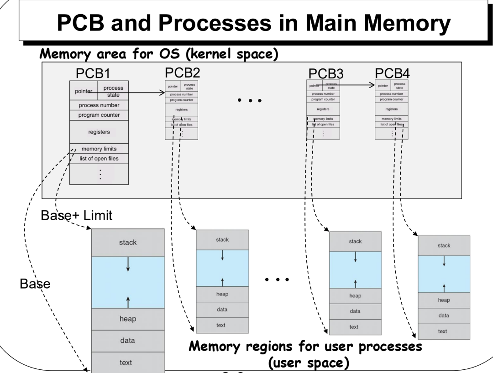
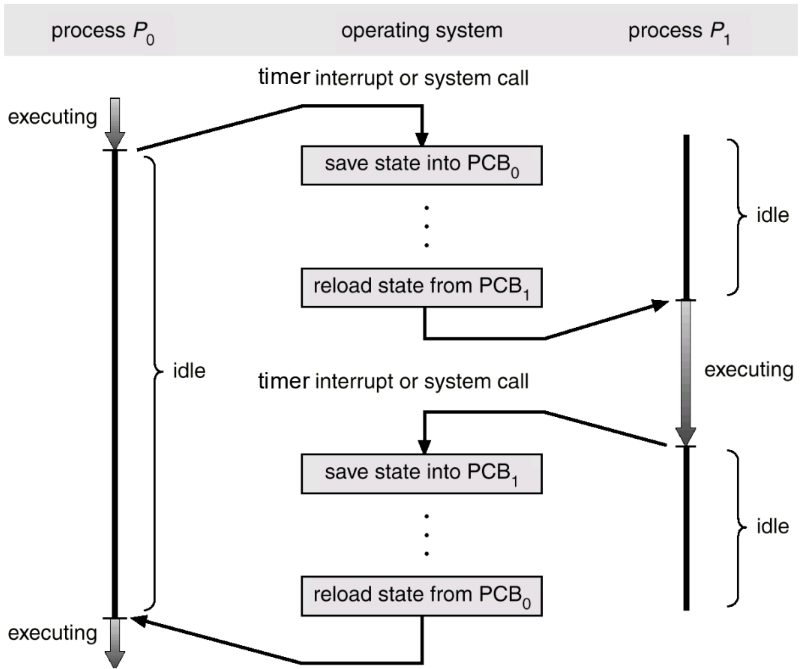
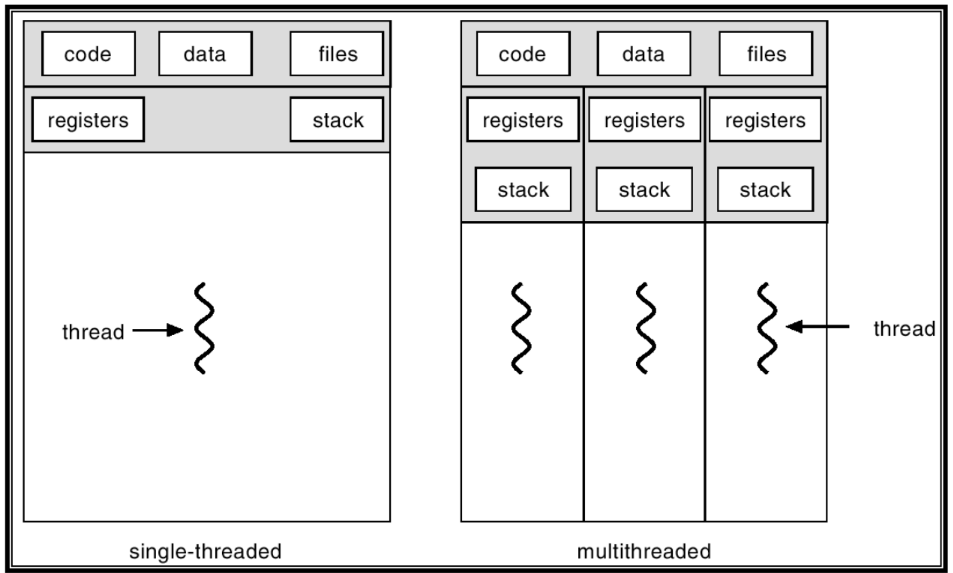
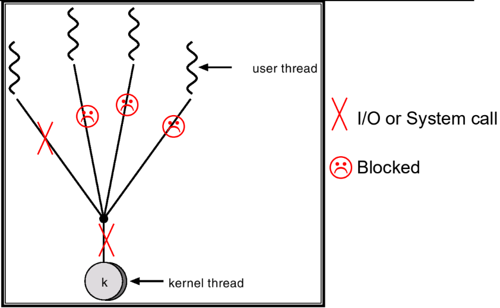

This was written entirely with AI.
Part 0: Overview, Source Files, and Baseline Verification
1. What This Lab Is About
Lab 2 investigates how an operating system represents processes, how the CPU switches between them, how priority scheduling works, and how threading libraries operate inside a single address space.
The lab exercises link four central OS concepts:
- Process state, process control blocks, and memory protection.
- Preemption and kernel context switching via hardware timer interrupts.
- CPU scheduling algorithms, priority disciplines, and starvation.
- Cooperative user-level thread libraries (the Many-to-One threading model).
2. Source Files Used in Each Part
- Part 1 (Process State & First Return):
kernel/proc.h: Declaresenum procstate,struct context, andstruct proc(the xv6 Process Control Block).kernel/proc.c: Contains the global process tableproc[NPROC],allocproc(),fork(), andforkret().user/sh.c: The xv6 shell implementation that issuesfork()to run user programs.
- Part 2 (Scheduling & Context Switching):
kernel/proc.c: Containsyield(),sched(), and the central CPU scheduling loopscheduler().kernel/swtch.S: The assembly-level context-switch routine that saves and restores CPU registers.kernel/trap.c: Handles device and clock interrupts that trigger preemption.kernel/console.c: Captures console keystrokes (such asCtrl-pto invokeprocdump()).user/schedtest.c: Test program running four children through finite work rounds to test scheduling progress.user/starvetest.c: Test program running two children in infinite CPU loops to demonstrate indefinite starvation.
- Part 3 (User-Level Threading Library):
user/uthread.c: The cooperative user-level threading runtime, state management, and thread scheduling.user/uthread_switch.S: The user-level assembly register save and restore engine.user/uthread_test.c: Test driver running three threads that print values 0 through 99 and yield cooperatively.
3. Establishing the Baseline
- Why a clean build is necessary: When switching Git branches from
lab1tolab2, compiled object files, generated stubs, and old disk images can cause stale symbol references. Runningmake cleanwipes these artifacts. - Booting with 1 CPU: We use
make CPUS=1 qemubecause reasoning about scheduling starvation is deterministic on a single core. - Unmodified Baseline Check: Running
uthread_teston an unmodifiedlab2branch prints nothing and returns immediately to the shell because the user-level thread library is not yet implemented.
Part 1:
Process State, Ownership, and the First Return
(forkret)
1. Concept First: Process Control Block (PCB) & Memory Isolation
In operating system theory, a program running on the computer is a process. To manage this process, the operating system kernel maintains an internal record called a Process Control Block (PCB).
The PCB stores everything the operating system needs to know about a program:
- Its current execution state (e.g., whether it is ready, running, or waiting).
- Its unique identifier (PID).
- Its saved register values and stack pointers.
- Its memory management structures (page tables) and open file list.
In xv6, the PCB is represented by struct proc in
kernel/proc.h, and the operating system keeps a global
array of these structures called proc[NPROC] in
kernel/proc.c.

Figure 1: PCB and Processes in Main Memory (Lecture 2, Slide 2.9). Notice the strict division: kernel memory holds the Process Control Blocks (PCBs) and kernel data, while user space holds separate memory regions (text, data, heap, stack) for each user process.
2. The Three State Layers of an xv6 Process
Inside struct proc, xv6 separates process information
into three distinct execution structures:
- User Page Table (
pagetable_t): Maps the virtual memory addresses of the user program to physical memory frames. The kernel data segment (which includesproc[]) is mapped exclusively in Supervisor Mode. User programs execute in User Mode without permissions to read kernel memory; any attempt to directly dereference kernel addresses results in a hardware page fault. - Trapframe (
struct trapframe): A dedicated memory page storing all 32 general-purpose user registers plussepcandsstatus. This structure is populated whenever execution crosses the privilege boundary between User Mode and Supervisor Mode (due to a system call, interrupt, or hardware exception). - Kernel Context (
struct context): A small structure storing only 14 registers (ra,sp,s0–s11). These are used exclusively during kernel-level context switches between different kernel threads or between a kernel thread and the CPU’s scheduler loop.
3. Process State Transitions & Ownership
xv6 tracks process lifecycles via enum procstate:
UNUSED: Process slot is free.USED: Initialized byallocproc().SLEEPING: Blocked waiting for an I/O event or lock.RUNNABLE: Ready to execute and waiting for CPU allocation.RUNNING: Currently executing on a CPU core.ZOMBIE: Finished execution, waiting for its parent to callwait().
Key transitions explored in this part:
- New child becomes
RUNNABLE(fork()inkernel/proc.c):- Assignment:
np->state = RUNNABLE; - Owner: The parent process executing the
fork()system call.
- Assignment:
RUNNABLEbecomesRUNNING(scheduler()inkernel/proc.c):- Assignment:
p->state = RUNNING; - Owner: The per-CPU scheduler thread selecting an eligible ready
process. Only a
RUNNABLEprocess can be picked because choosing a sleeping or unused process would execute invalid or blocked code.
- Assignment:
RUNNINGbecomesRUNNABLE(yield()inkernel/proc.c):- Assignment:
myproc()->state = RUNNABLE; - Owner: The currently running process itself, voluntarily yielding after a hardware timer interrupt or trap.
- Assignment:
4. The
Guided Trace: From fork() to First Scheduling
(forkret)
When a shell command like ls is launched, it follows a
guided path through the kernel:
user/sh.c: The shell callsfork().allocproc()inkernel/proc.c:- Allocates a PID, kernel stack, and trapframe.
- Sets the initial saved kernel context:
p->context.ra = (uint64)forkret;(Sets the context return address toforkret).p->context.sp = p->kstack + PGSIZE;(Sets the context stack pointer to the top of the newly allocated kernel stack).
fork()inkernel/proc.c:- Copies parent memory and trapframe.
- Sets
child->trapframe->a0 = 0(sofork()returns0in the child). - Transitions state:
np->state = RUNNABLE;
scheduler()andswtch()inkernel/proc.c:- The CPU scheduler finds the child
RUNNABLE, sets its state toRUNNING, setsc->proc = p, and callsswtch(&c->context, &p->context). swtch.Srestores the registers stored inp->contextand executesret.- Because
rawas initialized toforkret, the CPU jumps toforkret().
- The CPU scheduler finds the child
forkret():- The comment above
forkret()explains its purpose: Every newly created process must release the lock (p->lock) that was acquired by the scheduler loop before returning to user space. - On the very first run,
forkret()also initializes file system disk subsystems. - It then calls
usertrapret(), which restores the user registers fromtrapframeand issuessretto place the child at the user instruction immediately followingfork()with0in registera0.
- The comment above
Part 2: Context Switching, Scheduling Policies, and Starvation
1. Concept First: CPU Scheduling and Context Switching
In a multiprogramming system, several processes share CPU time. The CPU scheduler determines which ready process is allocated the CPU core.
When switching from Process A to Process B, the OS performs a context switch: saving Process A’s execution context into its PCB and loading Process B’s execution context from its PCB. Context switch time is pure overhead because the CPU performs no application work during the transition.

Figure 2: Context Switch Between Processes (Lecture 2, Slide 2.11). When a timer interrupt or system call occurs, the OS saves state into PCB 0, reloads state from PCB 1, and lets Process 1 execute.
2. Tracing the Preemption Path Across Four Functions
Preemptive scheduling forces a running process to give up the CPU without its consent.
xv6 accomplishes timer preemption through four specific functions:
User Mode Execution
│
▼ (Hardware Clock Timer Interrupt)
kernel/trap.c: usertrap() / devintr()
│
▼ (Identifies timer tick; decides process must yield)
kernel/proc.c: yield()
│ Acquires p->lock
│ Changes p->state: RUNNING ──> RUNNABLE
▼
kernel/proc.c: sched()
│ Verifies pre-conditions: holding p->lock, interrupts disabled, state == RUNNABLE
▼
kernel/swtch.S: swtch(&p->context, &c->context) [Call Site 1]
│ Saves process registers into p->context
│ Restores scheduler loop registers from c->context
│ Returns into scheduler()
▼
kernel/proc.c: scheduler()
│ Releases p->lock
│ Scans proc[] for the next RUNNABLE candidate
│ Acquires next p->lock; sets p->state = RUNNING; sets c->proc = p
▼
kernel/swtch.S: swtch(&c->context, &p->context) [Call Site 2]
│ Saves scheduler loop registers into c->context
│ Restores new process registers from p->context
▼
kernel/proc.c: sched()
│ Resumes execution immediately after Call Site 1
▼
kernel/proc.c: yield()
│ Releases p->lock
▼
kernel/trap.c: usertrapret() ──> sret ──> User ModeKey Invariants of Context Switching:
- xv6 never switches directly between two processes. Every switch hops
through the CPU’s dedicated
scheduler()context. - The Lock Rule:
p->lockmust be acquired before changingp->state = RUNNABLEinyield(), held acrosssched()andswtch(), and released by the CPU scheduler only after the switch completes. This lock protects against race conditions where another CPU might try to schedule the process while it is still in the middle of saving its registers.
3. The Callee-Saved
Register Rule (swtch.S)
Under the RISC-V Calling Convention (ABI):
- Registers are categorized into caller-saved
(
t0–t6,a0–a7) and callee-saved (s0–s11,sp,ra). swtch(&old, &new)is invoked as a standard C function call from withinsched()orscheduler().- According to compiler conventions, if the caller function needs
values in caller-saved registers preserved across a function call, it
must save them onto its stack before calling
swtch(). - Therefore,
swtch()only needs to save and restore the registers that a called C function is obligated to preserve: the callee-saved registers (s0–s11), the stack pointer (sp), and the return address (ra).
.globl swtch
swtch:
# a0 points to struct context *old
# a1 points to struct context *new
sd ra, 0(a0)
sd sp, 8(a0)
sd s0, 16(a0)
sd s1, 24(a0)
# ... saves s2 through s11 ...
ld ra, 0(a1)
ld sp, 8(a1)
ld s0, 16(a1)
ld s1, 24(a1)
# ... restores s2 through s11 ...
ret4.
Observing Baseline Behavior: schedtest.c
vs. starvetest.c
procdump()Snapshot (Ctrl-p): PressingCtrl-ptriggers a console interrupt that prints the PID, state (runble,run,sleep), and process name. This is only an instantaneous debugging snapshot; it reflects process status at that specific instant.schedtest.c(Testing Postponement & Progress): Creates 4 children, releases them through a pipe gate, and runs each through 4 rounds of 4,000,000 compute loops. Because children eventually complete their loops and exit, this test demonstrates temporary postponement and progress, but not permanent starvation.starvetest.c(Testing Indefinite Starvation): Spawns two children—one verified to have an even PID and the other an odd PID. After release through a pipe gate, both enter infinite CPU loops (no sleep, no I/O, no exit).- Baseline (Default Scheduler): Both even and odd children make
forward progress because the stock scheduler scans
proc[]round-robin, giving each child turns on timer preemption.
- Baseline (Default Scheduler): Both even and odd children make
forward progress because the stock scheduler scans
5. Strict Even-PID Priority Policy & Starvation
You modify scheduler() in kernel/proc.c to
implement strict priority:
- The Policy: Whenever an eligible even-PID process
is
RUNNABLE, it must be selected. An odd-PIDRUNNABLEprocess can run only when no eligible even-PID processes exist.
Implementation Strategy (Two-Pass Scan):
void scheduler(void) {
struct proc *p;
struct cpu *c = mycpu();
c->proc = 0;
for(;;){
intr_on();
int found_even = 0;
// Pass 1: Look exclusively for runnable EVEN-PID processes
for(p = proc; p < &proc[NPROC]; p++) {
acquire(&p->lock);
if(p->state == RUNNABLE && (p->pid % 2 == 0)) {
p->state = RUNNING;
c->proc = p;
swtch(&c->context, &p->context);
c->proc = 0;
found_even = 1;
release(&p->lock);
break; // Re-evaluate priority from the top
}
release(&p->lock);
}
// Pass 2: Look for runnable ODD-PID processes ONLY if no even process ran
if(!found_even) {
for(p = proc; p < &proc[NPROC]; p++) {
acquire(&p->lock);
if(p->state == RUNNABLE && (p->pid % 2 != 0)) {
p->state = RUNNING;
c->proc = p;
swtch(&c->context, &p->context);
c->proc = 0;
release(&p->lock);
break;
}
release(&p->lock);
}
}
}
}Starvation Analysis on
starvetest:
- Under strict even-PID priority with
CPUS=1, the even child runs until a timer interrupt triggersyield(), placing it back into theRUNNABLEstate. - When the scheduler loop runs, Pass 1 immediately discovers that the
even child is
RUNNABLE. - The scheduler picks the even child again. Pass 2 is never reached.
- Result: The odd child remains permanently trapped
in the
RUNNABLEstate. It experiences starvation (indefinite postponement) because the compute-bound even child never blocks or exits. - Why
CPUS=1is Mandatory: IfCPUS > 1, an even process executing on CPU 0 is markedRUNNING. When CPU 1 evaluates Pass 1, that even process is notRUNNABLE, allowing CPU 1 to fall through to Pass 2 and run the odd process, masking the starvation behavior.
Part 3:
Cooperative User-Level Threads (uthread)
1. Concept First: Processes vs. Threads
A traditional process is heavyweight: it has its own private address space, page table, open file table, and kernel PCB.
A thread is a lightweight unit of CPU utilization within a process:
- All threads inside a process share the same code, global data, heap, and open files.
- However, each thread must have its own private Program Counter (PC), CPU register state, and stack space to track execution and local variables independently.

Figure 3: Single vs Multithreaded Processes (Lecture 2, Slide 2.31). Threads within the same process share code, data, and open files, but maintain private stacks and register sets.
2. Thread Implementation: Many-to-One Model
Lecture 2 outlines three multithreading models: Many-to-One, One-to-One, and Many-to-Many.
Part 3 of Lab 2 builds a Many-to-One user-level thread
library (uthread):
- The xv6 operating system kernel is unaware of the individual user threads. It schedules only the parent process.
- The application links with a user library
(
user/uthread.c) that creates and switches user threads entirely inside user address space. - Cooperative Scheduling: User space has no hardware
timer interrupt. Threads run until they voluntarily yield the CPU by
calling
thread_yield()or exit viathread_exit().

Figure 4: Many-to-One Mapping (Lecture 2, Slide 2.36). Multiple user-level threads are multiplexed on top of a single kernel-managed thread.
3. Engineering the
uthread Library
Step 1:
Thread Representation (struct thread in
user/uthread.c)
Inside user/uthread.c, each thread is represented by a
control block:
struct thread_context {
uint64 ra;
uint64 sp;
uint64 s0;
uint64 s1;
uint64 s2;
uint64 s3;
uint64 s4;
uint64 s5;
uint64 s6;
uint64 s7;
uint64 s8;
uint64 s9;
uint64 s10;
uint64 s11;
};
struct thread {
char stack[STACK_SIZE]; /* Private execution stack */
int state; /* FREE, RUNNING, RUNNABLE */
struct thread_context context; /* Saved register state */
};Step 2: The
Assembly Engine (user/uthread_switch.S)
The C structure field order and assembly offsets must match exactly:
.globl thread_switch
thread_switch:
/* a0 = pointer to old thread_context */
/* a1 = pointer to new thread_context */
sd ra, 0(a0)
sd sp, 8(a0)
sd s0, 16(a0)
sd s1, 24(a0)
sd s2, 32(a0)
sd s3, 40(a0)
sd s4, 48(a0)
sd s5, 56(a0)
sd s6, 64(a0)
sd s7, 72(a0)
sd s8, 80(a0)
sd s9, 88(a0)
sd s10, 96(a0)
sd s11, 104(a0)
ld ra, 0(a1)
ld sp, 8(a1)
ld s0, 16(a1)
ld s1, 24(a1)
ld s2, 32(a1)
ld s3, 40(a1)
ld s4, 48(a1)
ld s5, 56(a1)
ld s6, 64(a1)
ld s7, 72(a1)
ld s8, 80(a1)
ld s9, 88(a1)
ld s10, 96(a1)
ld s11, 104(a1)
retStep
3: Stack Alignment and Initial Context Setup
(thread_create)
Under the RISC-V ABI specification, the stack pointer sp
must be 16-byte aligned on function entry. In
thread_create():
void thread_create(void (*func)()) {
struct thread *t;
// Find a FREE slot in all_thread[]
...
t->state = RUNNABLE;
// 1. Point sp to the top of the stack buffer (stacks grow downward)
uint64 sp = (uint64)t->stack + STACK_SIZE;
// 2. Align to 16-byte boundary
sp = sp & ~((uint64)0xF);
// 3. Set up the context so the first thread_switch jumps to func
t->context.sp = sp;
t->context.ra = (uint64)func;
}Step 4: First Execution of a New Thread
- Resumed Thread: Returns to the instruction following
thread_switch()insidethread_yield(). - Newly Created Thread: Has never called
thread_switch(). Becauset->context.rawas set tofunc, whenthread_switchloadst->context.rainto the CPU’sraregister and executesret, the CPU jumps directly tofunc()on its private stack.
Step 5: Why No Trapframe is Needed for User Threads
A trapframe is required when transitioning across
privilege rings (User Mode
Supervisor Mode) due to hardware interrupts or system calls. In
contrast, thread_yield() is a cooperative user-mode
function call. Because the CPU mode never changes and no hardware traps
occur, saving callee-saved registers using thread_switch.S
is sufficient.
4. Verification
Checkpoint: uthread_test
When correctly implemented, running uthread_test
produces:
- Startup notifications:
thread_a started,thread_b started,thread_c started. - Each thread prints numbers 0 through 99 while cooperatively yielding.
- Counting order can differ from start order due to thread-selection scanning logic.
- Each thread reports completion:
thread_a: exit after 100,thread_b: exit after 100,thread_c: exit after 100. - The scheduler terminates cleanly:
thread_schedule: no runnable threads.
Lab 2 Self-Check & Quiz Traps
- Why can
procdump()readproc[]directly while an ordinary user program cannot?procdump()runs in Supervisor Mode inside the kernel, where the kernel page table maps theproc[]array. User programs execute in User Mode under a user page table that has no access permissions to kernel memory; any direct attempt to dereference kernel addresses results in a hardware page fault. - How does a timer interrupt lead from a running process to
the scheduler and back? Hardware timer interrupt
usertrap()callsyield()marks stateRUNNABLEand callssched()swtch()saves process context and restores CPU scheduler contextscheduler()selects nextRUNNABLEprocessswtch()restores that process’s contextsched()returns toyield(), which returns tousertrapret(), restoring user registers and executingsret. - Under the strict even-PID policy, what workload starves an
odd-PID process? An even-PID process executing an infinite
compute loop (no I/O, no sleep). When the timer interrupt triggers
yield(), the even process is placed back inRUNNABLEstate. Because the scheduler prioritizes even PIDs in Pass 1, it immediately reselects the even process on every pass, starving the odd process indefinitely. - Why are callee-saved registers,
ra, andspsufficient forswtch()?swtch()is called as a C function. By the RISC-V ABI convention, the calling function automatically saves any caller-saved registers it needs preserved onto its own stack prior to callingswtch(). Thus,swtch()only needs to preserve callee-saved registers (s0–s11),sp, andra. - How does a never-run user thread begin executing its
function on its own stack?
thread_create()initializes the thread context’sspto the top of its aligned stack buffer and assignsrato the entry function pointer. Whenthread_switch()restores these registers and executesret, the CPU jumps directly to the entry function executing on the designated stack. - What is the difference between the kernel scheduling a
process and the library scheduling a user thread? Kernel
process scheduling is preemptive, mediated by timer interrupts and
hardware privilege switches, with each process possessing an isolated
address space and PCB. User thread scheduling in
uthreadis cooperative (Many-to-One), running entirely within a single user address space without kernel intervention or trap overhead. - What does the comment above
forkret()explain? It explains thatforkret()exists because every newly created process must release the lock (p->lock) that was acquired by the scheduler loop before returning to user space for the first time. - Why must
CPUS=1be set when demonstrating starvation instarvetest? If multiple CPUs are active, a compute-bound even process running on CPU 0 is markedRUNNING. When CPU 1 scans the table, that process is notRUNNABLE, allowing CPU 1 to schedule the odd process and masking starvation.